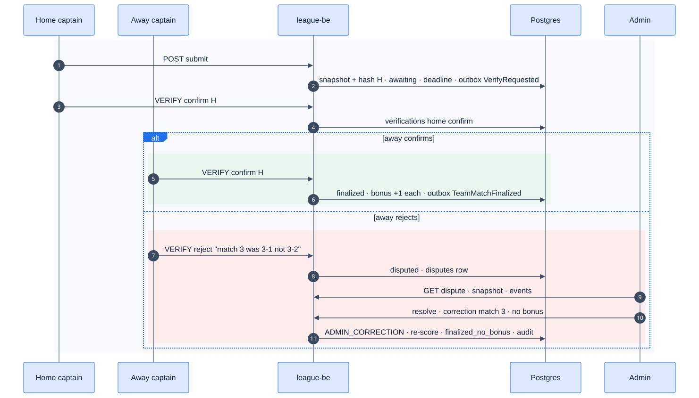

21 - Score Verification & Disputes
Epic E08 · 1 feature
| Goal | Both teams agree on the night's record before it counts. Agreement earns a standings bonus; disagreement becomes a dispute that an admin resolves with an audit trail |
| Phase | 2 |
| Status | Target Not started. Phase 1 has a single submitted status (E04-F15) |
| Actors | Home captain, Away captain, Admin (League Operator) |
| Related | 04 §8 · 08 §6 · Q30 |
21.1 Features by phase
21.1.1 Phase 1
Nothing. A night is final as soon as one captain or an admin submits it; admins can still edit afterwards.
21.1.2 Phase 2
| # | Feature | Status |
|---|---|---|
| F31 | Dual-captain verification, bonus, disputes, admin resolution | Target |
21.2 Phase 2 deep dive
21.2.1 What changes from Phase 1

finalized or finalized · no bonus. In Phase 1 they count from submitted.Open full screen21.2.2 Components

21.2.3 Data delta
| Object | Change |
|---|---|
team_matches.status |
Adds awaiting_verification, finalized, finalized_no_bonus, disputed (Phase 1 submitted maps to awaiting_verification) |
team_matches |
+ snapshot_json jsonb, snapshot_hash text, verification_deadline timestamptz, bonus_home int, bonus_away int |
verifications (team_match_id, team_id, decision, snapshot_hash, comment, user_id, at) |
One row per team; latest wins until finalized |
disputes (id, team_match_id, opened_by, reason, diff jsonb, status, resolution, corrections jsonb, grant_bonus, resolved_by, resolved_at) |
Admin queue |
team_standings view |
Sums only finalized nights and adds the bonus |
21.3 F31 — Dual-captain verification, bonus, disputes, admin resolution
| Phase | Status | Rules | Repo refs |
|---|---|---|---|
| 2 | Target | R-110, R-111, R-112, R-113 · 08 §6 | Phase 1 analogue: SubmitNightSheet (parked) and POST /team-matches/{id}/submit |
21.3.1 Requirements
As a captain, after the last match I check the night's summary and confirm it. When both teams confirm the same record, we each get a bonus. If something's wrong, I reject it with a reason and an admin sorts it out.
| ID | Requirement |
|---|---|
| FR-31.1 | Submit (all 5 slots complete or forfeit) builds a canonical snapshot: per match the member ID, SL, games won/needed (or points/target), points, innings, DS; plus team totals. Keys sorted, no whitespace; snapshot_hash = sha256(json) |
| FR-31.2 | Status → awaiting_verification, verification_deadline = ended_at + 24 h (R-112, configurable per division) |
| FR-31.3 | Each team's captain (or co-captain) sees the summary and sends `VERIFY {decision: confirm |
| FR-31.4 | Both confirm with the server hash → finalized, and each team gets the bonus: +1 (8-Ball) or +10 (9-Ball) (R-110) |
| FR-31.5 | Any reject → disputed with a dispute row. Dual-device mode (each team scored its own stream): the server diffs the two projections field by field and a mismatch opens a dispute automatically (R-111) |
| FR-31.6 | Deadline passes with fewer than two confirms → finalized_no_bonus for both teams (worker sweep every 5 min) |
| FR-31.7 | Admin resolution: the admin sees the snapshot, the diff, the comments and the event log; applies corrections (as ADMIN_CORRECTION events, re-scored by the same rules); chooses whether to grant the bonus; the result is finalized_no_bonus or finalized (if the bonus is granted). All audited (F41) |
| FR-31.8 | Any correction before finalization (by an admin) changes the hash and clears earlier confirms; both captains are asked again |
| FR-31.9 | Notifications (F40): "Please verify tonight's result", "Result disputed", "Dispute resolved" |
21.3.2 Logic: verification state machine

21.3.3 Flow: happy path and dispute

21.3.4 UI
| Screen | Content |
|---|---|
| Verify sheet (captain) | Totals with a crown on the winner, five match rows (players, SL, games, points), the bonus at stake, the deadline countdown, buttons Confirm (primary) and Something's wrong |
| Reject form | Pick the match(es) affected, free-text reason, submit |
| Night page | Badge: "Waiting for {team} to verify" · "Verified ✓ +1" · "Disputed" · "Final (no bonus)" |
| Admin › Disputes | Queue sorted by age; detail with a side-by-side diff (red cells), comments, event timeline, correction form, "Grant bonus" toggle, required resolution note |
21.3.5 API & data
json
{
"teamId": "<team-uuid>",
"decision": "confirm",
"snapshotHash": "9f2c<…>e1",
"comment": null
}| Error | When |
|---|---|
40301 |
The caller isn't a captain of that team or an admin |
40940 |
The hash doesn't match the current snapshot |
40941 |
The night isn't awaiting verification |
40942 |
The team has already confirmed this hash |
21.3.6 Edge cases
| ID | Situation | Expected |
|---|---|---|
| EC-31.1 | Deadline passes with one confirm | finalized_no_bonus for both teams (08 §8 #13) |
| EC-31.2 | A captain plays for both teams (impossible by roster rules) | Guarded by F39c; verification needs a distinct captain per team |
| EC-31.3 | Captain confirms, then spots an error before the other confirms | They can change to reject until finalized |
| EC-31.4 | Admin edits a finalized night | A post-final correction re-scores and audits; the bonus stays as decided |
| EC-31.5 | Forfeit slots | Included in the snapshot as `forfeit: home |
21.3.7 Acceptance criteria
- AC-31.1 Given both captains confirm the same hash, then the night is finalized and each team's standings rise by its points plus 1 (8-Ball).
- AC-31.2 Given an admin correction after one confirm, then the hash changes and both confirms are needed again.
- AC-31.3 Given 24 h pass with one confirm, then the status is
finalized_no_bonusand neither team gets a bonus. - AC-31.4 Given a dispute is resolved, then
audit_loghas the corrections, the bonus decision and the note.
21.3.8 Open questions
- Q30: who may submit, and can co-captains verify?
- Is 24 h the right window for this league?